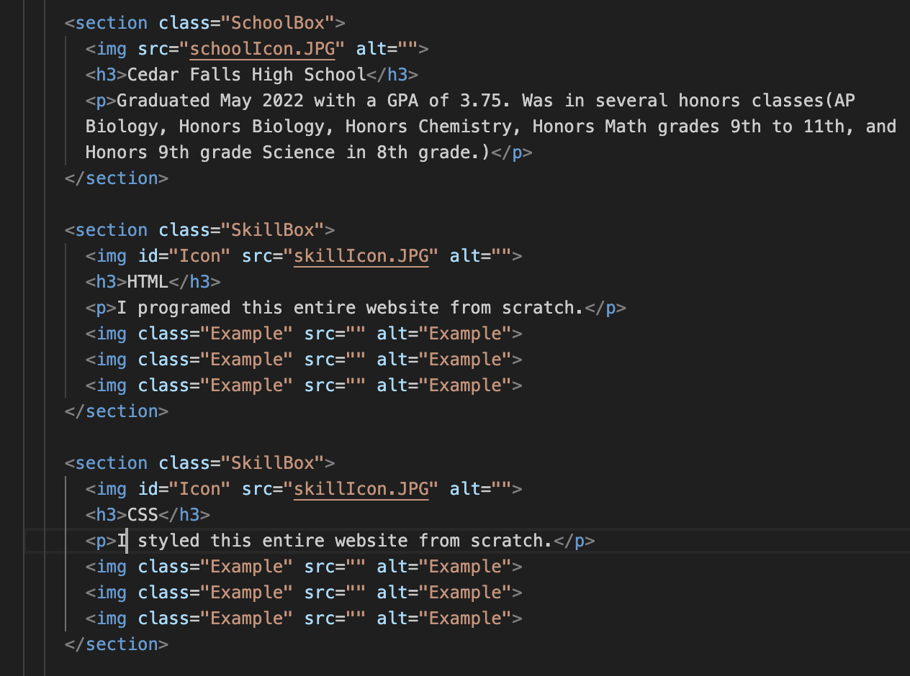
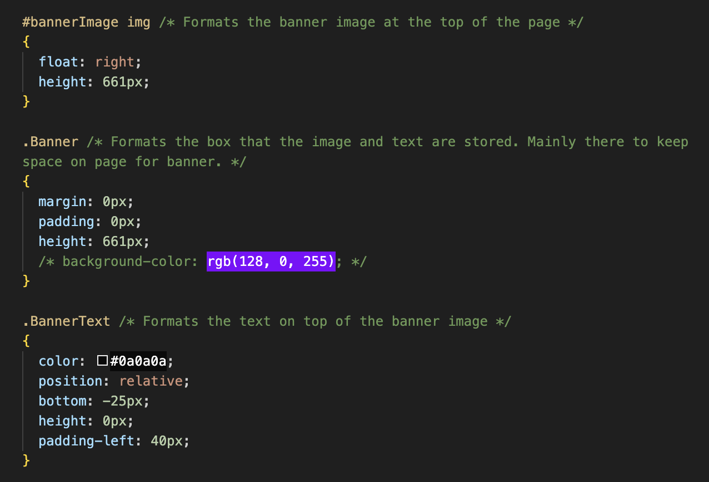
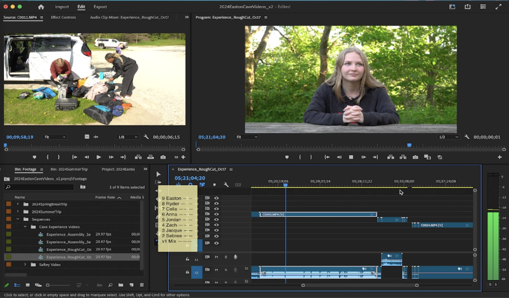
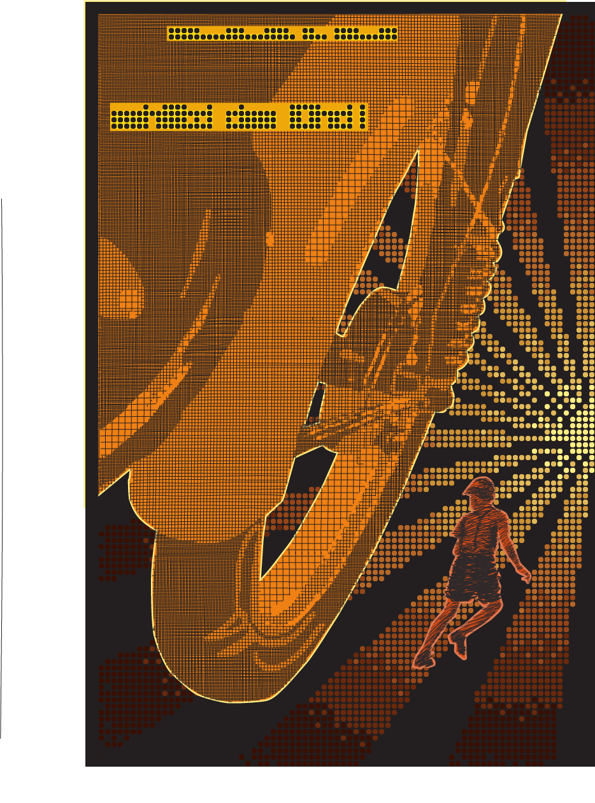
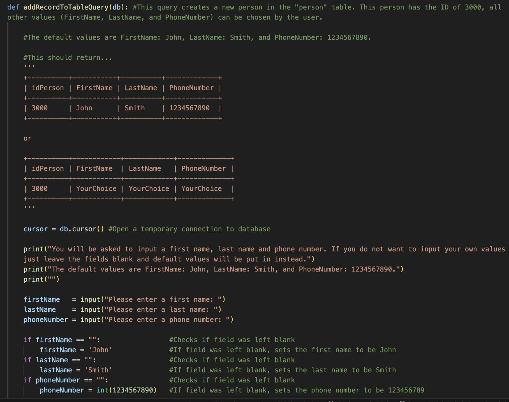
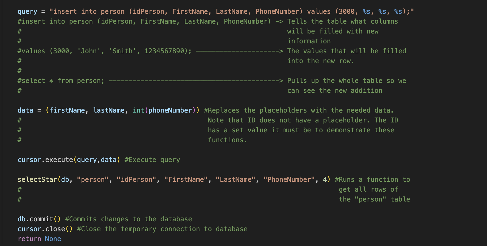

Meet Me
Education
Completed Projects
Experience & Resume
Plan
Current Projects
Meet Me
Education
Completed Projects
Experience & Resume
Plan
Current Projects
Yay school!!

This page is all about my education and skills I've learned. I've included some examples of the software skills I have.
Currently in my Junior year. Expected to graduate May 2026. I have a GPA of 3.65. I have gotten Dean's list 3 times. I am involved with several on-campus groups: UNI's Panther Marching Band, Cecilians, and Women in Computing. I hold leadership positions in both marching band and Women in Computing.
Graduated May 2022 with a GPA of 3.75. Was in several honors classes(AP Biology, Honors Biology, Honors Chemistry, Honors Math grades 9th to 11th, and Honors 9th grade Science in 8th grade.)
I programed this entire website from scratch. This is code of this very page!
I styled this entire website from scratch. This is code for the image you see at the top of each page.
I have used Premier for several years and produced many videos with it. This is a screenshot of what my editing set up looks like.
I created this image in my sophomore year in college. I think's it one of the best I've made.
I have used Python to create many programs. I even used it to make a interface for a database.
 